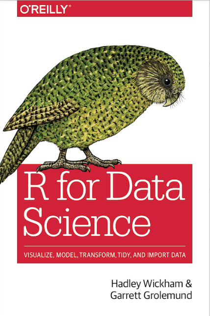

Resources
Before the workshop: Installing R and RStudio
Please install R and RStudio on your laptop. If you already have R and Rstudio installed, please make sure they are up-to date. Please install R version 4.3.1 and RStudio version 2023.09.0 Click here for instructions on installing R and RStudio
Textbooks

R for Data Science: Import, Tidy, Transform, Visualize, and Model Data by Garrett Grolemund and Hadley Wickham
Link
Definitions from Glosario
Further definitions at Glosario
Argument: one of possibly several expressions that are passed to a function. Oftentimes parameter and arugument are used interchangably, even though techincally parameter refers to the variable and argument refers to the value.
Assignment operator: Symbol that assigns values on the right to an object on the left. Looks like <-. Keyboard shortcut is Alt + -
Comment: Text written in a script that is not treated as code to be run, but rather as text that describes what the code is doing. These are usually short notes, beginning with a #
Comprehensive R Archive Network (CRAN): A public repository of R packages.
Data frame: A two-dimensional data structure for storing tabular data in memory. Rows represent records and columns represent variables.
Function: A code block which gathers a sequence of operations into a whole, preserving it for ongoing use by defining a set of tasks that takes zero or more required and optional arguments as inputs and returns expected outputs (return values), if any. Functions enable repeating these defined tasks with one command, known as a function call.
NA: A special value used to represent data that is not available.
Pipe operator: The %>% used to make the output of one function the input of the next.
Package: A collection of code, data, and documentation that can be distributed and re-used. Also referred to in some languages as a library or module.
Parameter: A variable specified in a function definition whose value is passed to the function when the function is called. Parameters and arguments are distinct, but related concepts. Parameters are variables and arguments are the values assigned to those variables. In practice though these terms are often used interchangeably.
Positional argument: An argument to a function that gets its value according to its place in the function’s definition, as opposed to a named argument that is explicitly matched by name.
Reproducible research: The practice of describing and documenting research results in such a way that another researcher or person can re-run the analysis code on the same data to obtain the same result.
Tibble: A modern replacement for R’s data frame, which stores tabular data in columns and rows, defined and used in the tidyverse. Almost always when you are working with a data frame, you are actually working with a tibble.
Tidy data: Tabular data that satisfies three conditions that facilitate initial cleaning, and later exploration and analysis—(1) each variable forms a column, (2) each observation forms a row, and (3) each type of observation unit forms a table.
Tidyverse: A collection of R packages for operating on tabular data in consistent ways.
Variable: A name in a program that has some data associated with it. A variable’s value can be changed after definition.
Vector: A sequence of values that have all the same type. Vectors are the fundamental data structure in R; a scalar is just a vector with exactly one element.
Incredible list of resources for learning
Reproduced from Tim Myer’s incredible r-learning-resources-for-genomics
We’ve added to some of the best resources for everyone on this list.


The
R Learning Resources for Genomicsrepository is a curated collection of free resources to help the aspiring computational biologist learn about theRprogramming language.Ris a free and open source language for statistical analyses and graphics. Biology and medicine generate more data than ever before. Data analysis skills and understanding of computational genomics is more important than ever.

Illustration by Allison Horst - CC BY 4.0
Getting Started with R
- RStudio Education - RStudio provides free and open source tools for
R, including educational tools. Choose yourRlearning path: beginner, intermediate, expert. Resources include cheatsheets, books and tutorials. - How to Get Started with R: A Video - In this brief YouTube video, you will find all the essentials you need to get started with the
RProgramming Language. Make sure to downloadRand RStudio to your local machine first. Brought to you by the Duke Center for Computational Thinking. - R for Data Science (R4DS) - This book by Hadley Wickham will teach you how to do data science with
R. You’ll learn how to get your data intoR, get it into the most useful structure, transform it, visualise it and model it. It’s designed to take you from knowing nothing aboutRor the tidyverse (see below) to having all the basic tools of data science at your fingertips. Find exercise solutions for R4DS here. - A Succinct Intro to R - This online book by Steve Haroz is a short introduction to the
Rlanguage. It assumes you are familiar with programing concepts but want to learnR. - Introduction to Data Science - This book by Rafael A. Irizarry which started out as the class notes used in the HarvardX Data Science Series introduces concepts and skills that can help you tackle real-world data analysis challenges.
- Data Science in R: A Gentle Introduction - This online book is structured as a series of walk-through lessons in
Rthat will have you doing real data science in no time. - An(other) introduction to R - An(other) gentle introduction to
Rand how you can use it to work with data. - An Introduction to R - A basic introduction to
R. Official CRAN documentation. - Swirl - Learn
R, inR.Swirlteaches youRprogramming and data science interactively, at your own pace, and right in theRconsole. - Data Flair - The tutorials are grouped by skill level (beginner, intermediate, expert).
- Computational Genomics with R - The aim of this online book is to provide the fundamentals for data analysis for genomics. It contains practical and theoretical aspects of computational genomics. Since computational genomics is interdisciplinary, this book aims to be accessible for biologists, medical scientists, computer scientists and people from other quantitative backgrounds.
- R for Reproducible Scientific Analysis - The goal of
R for Reproducible Scientific Analysisis to teach novice programmers to write modular code and best practices for usingRfor data analysis. - R Programming Examples - This web resource contains examples on basic concepts of
Rprogramming. - Using R for Common Scientific Tasks -
Rtutorial for common scientific data analysis and visualization tasks. View slides related to this tutorial here: (https://raw.githack.com/etmckinley/Coffey-Lab-R-Tutorial/main/R-tutorial-xaringnan.html). - R Graphical User Interface Comparison - A comparison of Graphical User interfaces for
Rposted on February 9, 2022 by Bob Muenchen in R bloggers. - How to read an R help page - “How to read an
Rhelp page” taken from Data Visualization - A practical introduction by Kieran Healy.
Learn the Tidyverse
- Tidyverse - The tidyverse is a collection of R packages designed for data science. All packages share an underlying design philosophy, grammar, and data structures.
- R for Data Science (R4DS) - This book by Hadley Wickham will teach you how to do data science with
R. You’ll learn how to get your data intoR, get it into the most useful structure, transform it, visualise it and model it. It’s designed to take you from knowing nothing aboutRor the tidyverse to having all the basic tools of data science at your fingertips. Find exercise solutions for R4DS here. - Teaching the tidyverse in 2021 - A new blog post for to update teaching the
tidyversein 2021, by Mine Çetinkaya-Rundel. - RStudio Cheatsheets -
RStudiocheatsheets make it easy to use some of our favoriteRpackages. - Statistical Inference via Data Science: A ModernDive into R and the Tidyverse - “Help! I’m new to
RandRStudioand I need to learn them! What do I do?” If you’re asking yourself this, this book is for you. - ggplot2: elegant graphics for data science - This book by Hadley Wickham goes into greater depth into the
ggplot2visualisation system.ggplot2is anRpackage for producing statistical, or data, graphics. - The Evolution of a ggplot - In this blog post, Cédric Scherer shows you how to turn a default ggplot into a plot that visualizes information in an appealing and easily understandable way.
- ggplot Wizardry Hands-On - A Step-by-Step tutorial: Tricks and secrets for a beautiful plot in
R, by Cédric Scherer. - Tidymodels - The tidymodels framework is a collection of packages for modeling and machine learning using tidyverse principles.
- Tidy Modeling with R - This book is a guide to using a new collection of software in the
Rprogramming language for model building. - ggside - The
Rpackageggsideexpands on theggplot2package. This package allows the user to add graphical information about one of the main panel’s axis. - Principal Component Analysis (PCA) with tidyverse - A blog post by Benjamin Nowak to show how to use
tidyversetools and syntax to perform PCA.
Beyond the basics
- What They Forgot to Teach You About R - Free online resource by Jenny Bryan and Jim Hester. The material is based on in-person workshops that focused on building holistic and project-oriented workflows that address the most common sources of friction in data analysis, outside of doing the statistical analysis itself.
- Advanced R (2nd Edition) - This is the website for the 2nd edition of
Advanced R, a book in Chapman & Hall’s R Series. The book is designed primarily for R users who want to improve their programming skills and understanding of the language. It should also be useful for programmers coming to R from other languages, as help you to understand whyRworks the way it does. - R Packages - The goal of this book, by Hadley Wickham and Jenny Bryan, is to teach you how to develop
Rpackages so that you can write your own. - Big Book of R - An online book by Oscar Baruffa and contributors that lists 200+
Rbooks, most are free. - R for Reproducible Scientific Analysis - The goal of
R for Reproducible Scientific Analysisis to teach novice programmers to write modular code and best practices for usingRfor data analysis. - “Do More with R” video tutorials - An article by Sharon Machlis about quick video tips on useful things you can do in
R. Most videos are shorter than 10 minutes. - Project-oriented workflow - An article by Jenny Bryan that includes advice on setting up your
Rlife to maximize effectiveness and reduce frustration. - Supervised Machine Learning for Text Analysis in R - This book serves as a thorough introduction to prediction and modeling with text, along with detailed practical examples.
- JavaScript for R - Did you know
Rworks just as well with JavaScript?! This book delves into the various ways both theRand JavaScript languages can work together. - tidyquery - SQL and R - The
tidyquerypackage runs SQL queries onRdata frames. For an introduction to tidyquery and queryparser, watch the recording of the talk “Bridging the Gap between SQL and R” from rstudio::conf(2020). - Geocomputation with R - Geocomputation with
Ris for people who want to analyze, visualize and model geographic data. - Data Visualization with R - This book helps you create the most popular visualizations - from quick and dirty plots to publication-ready graphs.
- Data Visualization - A practical introduction - A treasure trove of R-dataviz help by Kieran Healy.
- gghighlight: An R package for improved visualization - Highlight lines and points in a
ggplot2data visualization object. An introductory YouTube video is available. - Connecting to databases using R - A resource from RStudio for connecting to databases.
- Awesome R Package Development - A curated list of awesome tools to assist R 📦 development.
- Apache Arrow - Apache
Arrowcontains a set of technologies that enable big data systems to process and move data fast. Thearrowpackage forRcan:- Read and write Parquet files,
- Read and write Feather files
- Analyze, process, and write multi-file, larger-than-memory datasets. Click here for vignette.
- Much, much more. In order to learn how to use
arrowinR, refer to this documentation specific for theRenvironment.
Finding Help with R
- Getting Help with R - An article from the
R Projectthat describes the extensive facilities for accessing documentation and searching for help. - What do you do when R code throws an unexpected error? - This chapter of Hadley Wickham’s
Advanced R(see above) will give a general strategy for finding help with those obscure error messages. - R Error Message Cheat Sheet - A blog post by David Robinson lists common errors and how to fix them.
- Get Help….with reprex - If you need help, the first step is to create a
reprex, or reproducible example….learn how. - RStudio Cheatsheets -
RStudiocheatsheets make it easy to use some of our favoriteRpackages. - Stack Overflow - Find the best answers to your
Rquestions and help others with theirs. - ChatGPT - ChatGPT is a really incredible tool for learning coding. You can ask it to help you debug your code, or even write code for you.
- Phind - Phind is tuned for programming and adds links to sources. Phind uses the GPT models as well, only 10 free queries a day. ***
Continuous Learning
- TidyTuesday - A weekly social data project in R - A weekly social data project in
R. Every Monday they release a new dataset on the TidyTuesday Github page for participants to clean, wrangle, tidy, and plot. - Twitter for R programmers - The
Rcommunity is very active on Twitter. You can learn a lot about the language, about new approaches to problems, and make new friends. This online book will show you how. - R Weekly -
Ris growing very quickly, and there are lots of great blogs, tutorials and other formats of resources coming out every day. R Weekly wants to keep track of these great things in the R community and make it more accessible to everyone. - Keeping up to date with R news - Following
Rnews helps you learn about new tools and their applications. - RStudio Books - In addition to software tools, RStudio has also authored many books, some already highlighted in this curated list. Another tool for your toolbox.
Statistics
- eastystats -
easystatsis a collection ofRpackages that provides a consistent framework to harnessRstatistics. - statsExpressions: Tidy dataframes and expressions with statistical details - This
Rpackage provides a consistent syntax to do statistical analysis with tidy data (in pipe-friendly manner) and provides statistical expressions (pre-formatted in-text statistical results) for plotting functions. - ggstatsplot: ggplot2 Based Plots with Statistical Details -
ggstatsplotis an extension of theggplot2package (see section above) for creating graphics with details from statistical tests included in the information-rich plots themselves. - Modern Statistics with R - The aim of Modern Statistics with R is to introduce you to key parts of the modern statistical toolkit.
- Beyond Multiple Linear Regression - Online version of the book Beyond Multiple Linear Regression: Applied Generalized Linear Models and Multilevel Models in
R, by Paul Roback and Julie Legler. - Get Started with Bayesian Analysis - A vignette describing the Bayesian framework for statistics, including examples in
R. - Bayes Rules! An Introduction to Bayesian Modeling with R - The primary goal of
Bayes Rules!is to make modern Bayesian thinking, modeling, and computing accessible to a broader audience. - Fastverse - The fastverse is a suite of complementary high-performance packages for statistical computing and data manipulation in
R. - Principal Component Analysis (PCA) with tidyverse - A blog post by Benjamin Nowak to show how to use
tidyversetools and syntax to perform PCA. - modelsummary -
modelsummary is anR` package that creates tables and plots to summarize statistical models and data. - gtsummary - The
gtsummarypackage creates publication-ready analytical and summary tables inR. - factoextra : Extract and Visualize the Results of Multivariate Data Analyses -
factoextrais an R package that makes it easy to extract and visualize the output of exploratory multivariate data analyses, including: PCA, CA, MCA, MFA, HMFA and FAMD.
Reproducibility
- R for Reproducible Scientific Analysis - The goal of
R for Reproducible Scientific Analysisis to teach novice programmers to write modular code and best practices for usingRfor data analysis. - Reproducible Research Data and Project Management in R - A workshop that discusses
RandRstudiotools and conventions that offer a powerful framework for making modern, open, reproducible and collaborative computational workflows more accessible to researchers. - Packaging Data Analytical Work Reproducibly Using R - The purpose of this article is to show how the R package can be a suitable template for organising files into a research compendium to enhance the reproducibility of research.
- The Turing Way - A community and handbook to reproducible, ethical and collaborative data science. The Turing Way also maintains a Zero-to-Binder tutorial for 3 common languages,
Julia,Python, andR. For more information aboutBinder, see Getting Started with Binder below. - rrtools - Tools for Writing Reproducible Research in
R. This package documents the key steps and provides convenient functions for quickly creating a new research compendium. - rcompendium -
rcompendiummakes it easy to create of R packages or research compendia with a predefined files/folders structure. - targets: pipeline tool for R - The
targetspackage is a Make-like pipeline toolkit for Statistics and data science inR. Withtargets, you can maintain a reproducible workflow that skips costly runtime for tasks that are already performed. The user manual includes a walkthrough chapter. - Reproducible analysis and Research Transparency - Transparency, open sharing, and reproducibility are core values of science, but not always part of daily practice. This workshop (2017) provided an overview of current status in reproducible analysis in order to provide transparency in research.
- orderly -
orderlyis a package designed to help make analysis more reproducible. Its principal aim is to automate a series of basic steps in the process of writing analyses. - How to name files - Slide deck from Jenny Bryan about the why’s and how’s of naming files.
- groundhog - Write
Rscripts that are reproducible using thegroundhogpackage. - renv - The
renvpackage helps you create reproducible environments forRprojects. - Draw me a project - A great blog post by Maëlle Salmon about reproducibility.
- Docker - Get started with
Docker. - A Docker tutorial for reproducible research. - This is an introduction to Docker designed for participants with knowledge about R and RStudio.
- An Introduction to Docker for R Users - A quick introduction on using Docker for reproducibility in R, by Colin Fay.
- Generating Dockerfiles for Reproducible Research with R - The
Rpackagecontaineritaims to make reproducible and archivable research with containers easy. - Transparent reproducible R environment with Docker + renv - A quick introduction to setting up a transparent reproducible R environment with Docker + renv, by Elio Campitelli.
- Conducting reproducible research with Docker (Part 1 of 3) - A blog post by Derek Powell where he describes how to use to produce statistically and computationally reproducible researc using Docker.
- Singularity -
Singularityis an alternative container platform to Docker. You can build a container on your laptop and then run it on many of the largest HPC clusters in the world, local university or company clusters, a single server, in the cloud, or on a workstation down the hall. Additional details and help is also available here. - Get Started with Binder - This page will help you get started building your own repositories and sharing them with
Binder.Binderis a code repository that contains (1) code or content that you’d like people to be able to run (e.g.Rscript or Jupyter Notebook) and (2) configuration files used byBinderto build the environment to run you code. - Containerize conda - Instructions about how to package an existing environment into a Docker or Singularity container which should be more portable and can also easily be integrated into a fully reproducible data analysis workflow.
- conda-pack -
Conda-packis a command line tool for creating archives of conda environments that can be installed on other systems and locations. A tool likeconda-packis necessary because conda environments are not relocatable. Simply moving an environment to a different directory can render it partially or completely inoperable.conda-packaddresses this challenge by building archives from original conda package sources and reproducing conda’s own relocation logic. - CRAN Task View: Reproducible Research - The goal of reproducible research is to tie specific instructions to data analysis and experimental data so that scholarship can be recreated, better understood and verified. Packages in
Rfor this purpose can be split into groups for: literate programming, pipeline toolkits, package reproducibility, project workflows, code/data formatting tools, format convertors, and object caching. - R Workflow: Reproducible Biomedical Research Using Quarto - This online book was written to foster best practices in reproducible data documentation and manipulation, statistical analysis, graphics, and reporting. By Frank E Harrell Jr, Department of Biostatistics, School of Medicine, Vanderbilt University.
- 12 resources for reproducible computational research - A list of resources by Ming “Tommy” Tang, article dated 2022-11-09.
- Building reproducible analytical pipelines with R - A free ebook on how using a few ideas from software engineering can help data scientists, analysts and researchers write reliable code, by Bruno Rodrigues (June 2023).
- Packaging data analytical work reproducibly using R (and friends) - Using real-world examples, the authors show how researchers can improve the reproducibility of their work using research compendia based on R packages and related tools.
- Posit Public Package Manager - Provides standard mirrors of CRAN, Bioconductor, and PyPI, and can track changes over time or freeze packages to specific versions, to help ensure reproducibility and ease collaboration.
- pracpac - Practical R Packaging with Docker.
Markdown & R Markdown
Note: We are teaching Quarto which is the new supported way of doing markdown + R, but its is almost enteriely compatible with R Markdown so much of this will still apply.
- R Markdown from RStudio - Getting started with R Markdown. - R Markdown Cookbook - R Markdown is a powerful tool for combining analysis and reporting into the same document. This book provides practical and short examples to show the interesting and useful usage of R Markdown. - R Markdown: The Definitive Guide - An online reference book for R Markdown. And provides a detailed reference on the built-in R Markdown output formats of the rmarkdown package, as well as several other extension packages. - Visual R Markdown - RStudio v1.4 includes a new visual markdown editing mode. It provides improved productivity for composing longer-form articles and analyses with R Markdown. - Up and running with officedown - A blog article by Alison Hill that describes the officedown package which allows users to write Word and Powerpoint documents using R Markdown. - bookdown - An R package to facilitate writing books and long-form articles/reports with R Markdown. The home page includes a list of featured books. - List of featured books written with bookdown - A list of featured* books published to bookdown.org. Click here for a list generated automatically and roughly ordered by date. - RMarkdown Tips and Tricks - A collection of tweets by Indrajeet Patil containing tips and tricks related to R Markdown.
Shiny
- Shiny from RStudio - Get started with
Shiny, anRpackage to build interactive web apps straight fromR. - Mastering Shiny - The online version of the book by Hadley Wickham to get you writing
Shinyapps quickly. - Outstanding User Interfaces with Shiny - A book for experienced
Shinyusers who want to learn more about the underlying web technologies.
Git and Version Control
Gitis a useful tool for version control andGitHubsits on top ofGitand supports collaborative and distributed working.- Pro Git - What is “version control” and why we should care? This free online book by Scott Chacon and Ben Straub is explains it all. Dead tree versions are available
 .
. - Excuse me, do you have a moment to talk about version control? - This article by Jennifer Bryan describes the use of the version control system Git and and the hosting site GitHub for statistical and data scientific workflows. Special attention is given to projects that use the statistical language R and, optionally, R Markdown documents.
- Happy Git and GitHub for the useR - An online book that introduces Git, GitHub and version control.
- How to Write a Git Commit Message - Commit messages matter. Here’s how to write them well, by Chris Beams.
- The Pro Git Book - The entire Pro Git book, written by Scott Chacon and Ben Straub and published by Apress.
- GitHub actions with R - This book introduces GitHub actions, which help you automate tasks within your software development life cycle. More information available from GitHub Actions Documentation.
- gert - The
gertpackage is a simple git client based on ‘libgit2’. What this means forRusers is that you can work with local and remote Git repositories from the comfort ofR! - Enhanced support for citations on GitHub - GitHub now has built-in support for CITATION.cff files. This new feature enables academics and researchers to let people know how to correctly cite their work, especially in academic publications/materials.
- Github actions with R - Trigger GitHub actions that allow you to automate steps after launching GitHub interactions such as when you push, pull, submit a pull request, or write an issue.
Other
- Making Your Code Citable - If you’re a researcher writing software, this guide will show you how to make the work you share on GitHub citable by archiving one of your GitHub repositories and assigning a Digital Object Identifiers (DOI) with the data archiving tool Zenodo.
- Enhanced support for citations on GitHub - GitHub now has built-in support for CITATION.cff files. This new feature (2021) enables academics and researchers to let people know how to correctly cite their work, especially in academic publications/materials.
- grateful - The goal of
gratefulis to make it very easy to cite theRpackages used in any report or publication. - Twitter for Scientists - This book by Daniel S. Quintana, University of Oslo, will walk you through the ins and outs of using Twitter as a scientist to share your work. With Twitter and social media, the opportunity to share your work with everyone is available. People need to know your work exists before they can read it.
- tidyquery - SQL and R - The
tidyquerypackage runs SQL queries onRdata frames. For an introduction to tidyquery and queryparser, watch the recording of the talk “Bridging the Gap between SQL and R” from rstudio::conf(2020). - Doing Meta Analysis in R - This book serves as an accessible introduction into how meta-analyses can be conducted in
R. - Building a team of internal R packages - A blog post by Emily Riederer.
- The Story Behind rspatialdata - A blog post by Dilinie Seimon & Varsha Ujjinni Vijay Kumar about
rspatialdata, a repository of data sources and simple tutorials on how to retrieve and visualize spatial data using R. - Building a Data Package - Building an
Rpackage to make datasets readily available. - Awesome R package development - A curated list of awesome tools to assist with
R📦 development. - Deep Exploratory Data Analysis (EDA) in R - Exploratory Data Analysis is an important first step in data science. In this excellent post by Yury Zablotski, he provide the simplest and most effective ways to explore data in
R.
Miscellaneous
- HTTP testing in R - This book is meant to be a free, central reference for developers of
Rpackages accessing web resources. - Get Better At Testing Your R Package - This tutorial is about advanced testing of
Rpackages, with HTTP testing as a case study. Companion video tutorial available here. - How to create your personal CRAN-like repository - The r-universe platform provides users and organizations with a personal CRAN-like repository for publishing software, rmarkdown articles, and other content that fits in an
Rpackage. - How to name files - Slide deck from Jenny Bryan about the why’s and how’s of naming files.
- carbon - Create and share beautiful images of your source code.
- Well Well Well my Excel - How to import multiple excel files (not sheets, but files) into
R, by Data by John. - Fastverse - The fastverse is a suite of complementary high-performance packages for statistical computing and data manipulation in R.
- Why scientists should use Twitter - A blog post by the author of Twitter for Scientists, Dan Quintana.
- gt Tables - With the
gtpackage, anyone can make wonderful-looking display tables using theRprogramming language. - How to Use System Commands in your R Script or Package - Learn the basics of using command-lines tools from within
R. - ARTofR Package - The {xxx_*} family of functions offers a collection of stand-out comment lines that make different sections of
Rscripts easy to identify. - potools - Tools for working with translations in
R. - GIVE (Genomic Interactive Visualization Engine) - Not
Rbut an HTML5 library for creating portable and versatile genome browsers that can be used on personal websites. - sandbox.bio - Interactive bioinformatics tutorials - Learn how to use bioinformatics tools right from your browser. Everything runs in a sandbox, so you can experiment all you want.